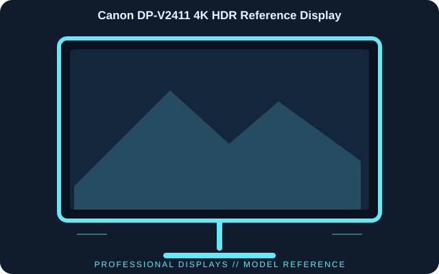

[ INDIVIDUAL COMPONENT // DISPLAYS ]
Canon DP-V2411 4K HDR Reference Display
A 24.1-inch 17:9 professional reference LCD designed for 4K cinema and HDR workflows, with Canon Log, PQ/HLG and extensive SDI connectivity.

IDENTIFICATION: Canon DP-V2411 4K HDR Reference Display; 2017 generation. Verify the full model code, region and hardware revision on the unit label. Published specifications describe the identified configuration; its matching manual and label take precedence if revisions differ.
Published specifications
| Catalog subcategory | Professional Displays |
|---|---|
| Exact model | Canon DP-V2411 4K HDR Reference Display |
| Panel / native resolution | 24.1-inch IPS LCD, 4096 × 2160 (17:9) |
| Peak luminance | Up to 1000 cd/m² with boost mode; 600 cd/m² full-screen white typical |
| Inputs | 12G/6G/3G/HD/SD-SDI × 4 and HDMI 2.0 with HDCP 2.2 |
| Outputs | SDI pass-through outputs; check the selected input/routing configuration |
| Color / transfer functions | BT.709, BT.2020, DCI-P3, Canon Cinema Gamut, PQ and HLG support |
| Mounting / power | 100 × 100 mm VESA; 100–240 V AC or 24 V DC input |
Compatibility & connectivity notes
The DP-V2411 is a reference monitor, not a consumer 4K television. Match source raster/frame rate, bit depth, color encoding and HDR transfer function to the input and selected monitor mode. 12G-SDI supports high-bandwidth single-link workflows; use properly rated coax and connectors. Canon documentation governs boost-mode luminance, calibration, signal routing and supported format combinations.
Preservation notes
Record the complete model suffix, serial/date code, input selection, source device, cable or adapter, tested timing and observed condition. Retain the matching regional manual and any calibration or service records with the display. Follow the manufacturer’s cleaning and service instructions; do not open CRT equipment without appropriate high-voltage training.
Manufacturer documentation & authoritative sources
- Canon Europe — DP-V2411 specificationsManufacturer documentation and model-specific reference.
- Canon Europe — DP-V2411 downloads and manualsManufacturer documentation and model-specific reference.